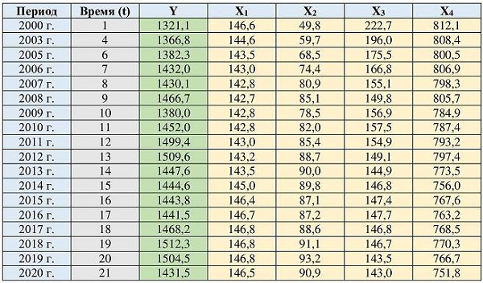

Исходная информация для
построения экономико-математической модели –
массив из статистических данных по России за
2000-20201 годы представленный в
табл. 1.
На основе расчета и анализа
парных коэффициентов корреляции уточняется перечень
факторов, включаемых в модель (табл.
2).
Таблица
1 – Исходная информация необходимая для проведения
корреляционно-регрессионного анализа
